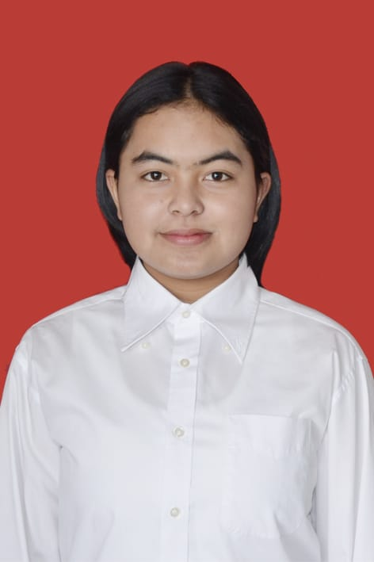

Dea Maranata Siregar
Sarjana Informatika
Email: dhesiregar09@gmail.com
WA: +62 822 3613 8258
Saya adalah orang yang suka mengeksplore hal-hal yang kurang saya pahami dan saya gigih untuk mengetahuinya.
Pendidikan
Sarjana Informatika
Institut Teknologi Del (2024 — Sekarang)
- SMA N 1 Lintongnihuta
- SMP N 3 Paranginan
- SD N 175776 Pearung
Pengalaman
- Anggota — Himpunan Mahasiswa Informatika
- Finalis — Jogja Essay Competition
Keahlian
Programming
Framework
Tools
Sertifikat
- Finalis Jogja Essay Competition
Portfolio
Github | @deaaakk
- github.com/deaaakk